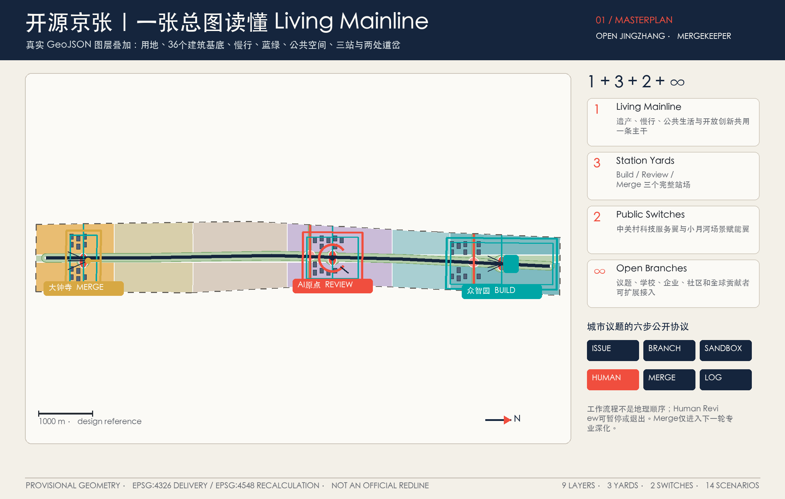
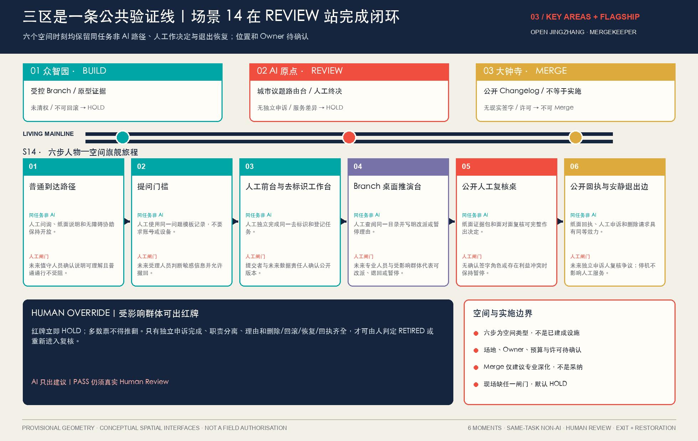
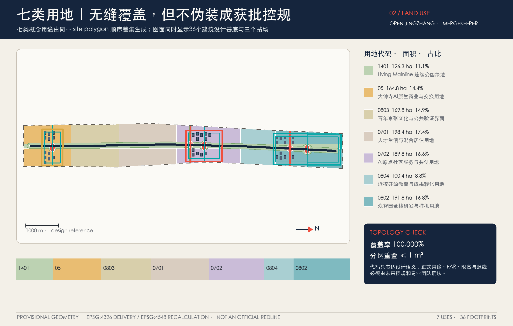
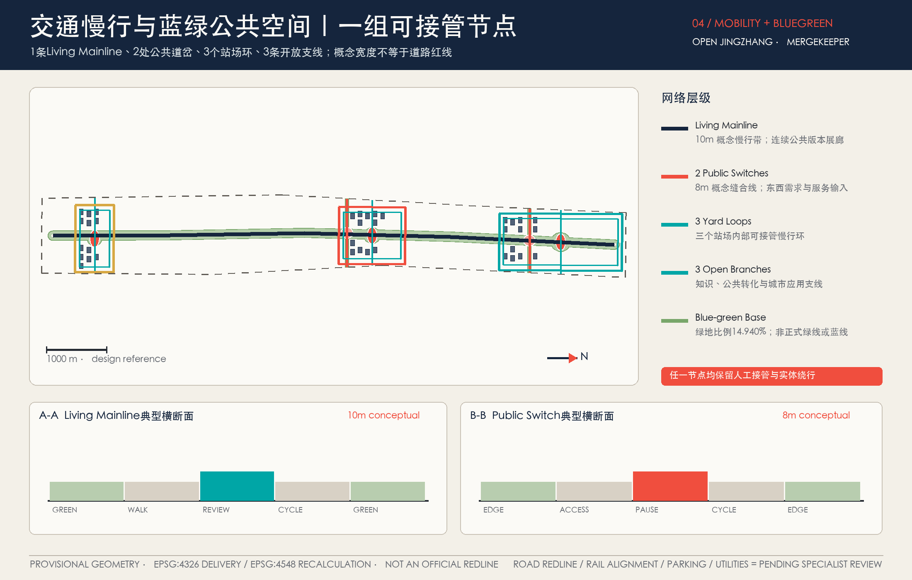
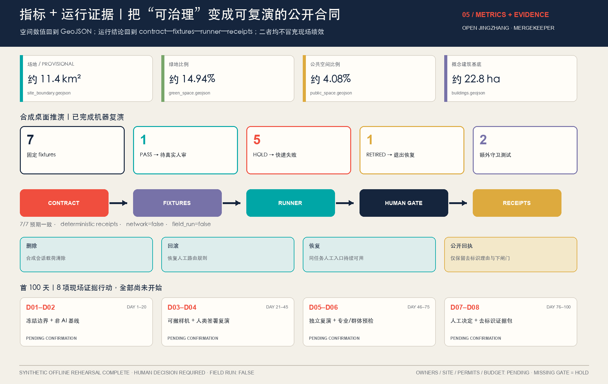

众智编组场 · Stack Yard
共享 Physical AI 原型、室内模拟与组装；室内验证与公共空间试验分两道门。
代表场景
具身机器人混行沙盒人工闸门
专业人员批准后才可离开封闭测试空间动作
共享原型、可逆庭院、限定路径退出条件
越权、不可复现或无法接管即隔离版本
具身机器人混行沙盒人工闸门
专业人员批准后才可离开封闭测试空间动作
共享原型、可逆庭院、限定路径退出条件
越权、不可复现或无法接管即隔离版本
把被纪念的百年铁路，转化为持续接收城市议题、公开验证 AI 方案并留下版本记录的开放主干线。
城市问题先到京张公开验证，AI 先证明，人再决定。
一张图读取 Living Mainline、三座差异化站场、两类公共道岔与可扩展支线。临时边界退居虚线证据层，主叙事由真实 GeoJSON 派生。


选择一座站场，读取它的空间动作、代表场景、人工闸门与退出条件。
共享 Physical AI 原型、室内模拟与组装；室内验证与公共空间试验分两道门。
居民、专业人员、运营方共同复核；AI 只辅助解释，不作城市终决。
多智能体互操作和城市应用交换；Merge 只表示建议进入专业深化，不等于上线。
城市议题沿 Issue—Branch—Sandbox 前进，但必须在 Human Review 明确选择退回、退役或建议专业深化；系统不会自动 Merge。
公开问题、影响人群、资料边界与责任缺口；Issue 不是立项，也不自动获得处理优先级。
每条分支登记假设、来源、Owner 建议与退出条件；涉及安全、公平和法定条件的否决先进入 Hold。
优先使用公开资料、固定材料与合成输入。无法人工接管、出现敏感数据或事实无来源时立即停止。
AI 只提交证据，居民、专业人员、运营人员与公共守门人选择下一步。没有人工选择，流程停在这里。
尚未作出人工决定；Merge / Retired 保持锁定。
此步骤必须等待 Human Review。Merge 仅表示建议进入下一轮专业深化与审查；Retired 表示停止推进并保留失败档案。
记录采用、修改、退回与撤回的理由，不披露个人数据；后来者可以沿版本回到当时的证据与人工决定。
即使浏览器禁用 JavaScript，六步说明仍完整可读；启用后可逐步查看并模拟人工决定。
统筹研究负责生态与协同，总体设计负责空间主干，重点区域负责 Build—Review—Merge；1+3+2+∞ 是工作结构，不是第四套边界。


36 个建筑基底只是概念更新类型学，不是现状测绘或拆除判决；九项更新行动按证据成熟度进入、暂停或退出。
保留 → 修缮 → 适应性再利用 → 待专业判定。未取得权属、结构安全、文保与控规资料前，不对任何真实建筑作拆除结论。
Phase 1：OJZ-01/02/03/04/09 主干、三站与人审响应台；Phase 2：OJZ-05/06/07 道岔、失败档案与成绩牌；Phase 3：OJZ-08 适应性再利用研究。阶段是证据依赖，不是开工承诺。
十四个 branch 共用 Model Passport：目的、数据最小化、负责人、人审点、版本、成功/退出指标。红色为产业测试验证场景。
优先显示 3 个仅使用公开材料与合成输入的旗舰模拟场景。
一名居民从日常通行进入提问、人工受理、公开回执与退出恢复。AI 只生成可复核的路由建议；Human Review 决定 Pass、Hold 或 Retire，且非 AI 等价服务始终保留。
离线 runner 已复演 7/7：1 PASS、5 HOLD、1 RETIRED；此处显示 PASS 用例，仍须 Human Review。
Pass 不等于 Merge：AI 只建议 Branch；未取得明确的人工作出继续决定前，议题不能进入专业深化，更不代表采纳、采购或上线。
SYNTHETIC · FIELD RUN: FALSE读取机器可复核回执 JSON
Hold 不是忽略：runner 快速失败并公开阻断原因；材料修复后必须从同一规则重新复演，不能手动改写为 Pass。
S14-HOLD-001 · EXPECTATION MATCHED读取 5 条 HOLD 回执
失败退出与恢复：停止自动路由，删除合成会话，回滚到人工受理，确认人工入口持续可用，并发布不含个人信息的 Retired 回执。
SYNTHETIC · FIELD RUN: FALSE查看 Pass / Hold / Retire 决策契约
synthetic_offline_rehearsal_complete · synthetic=true · field_run=false · human_decision_required=true · not_authorized_not_run
本区将 contract、fixtures 与 committed receipts 转译为可读界面。7 个合成用例均与预期一致；这只证明契约、失败注入与回执能够被确定性复演，不证明现场有效、安全、合规、获批或已经实施。
空间数字来自 EPSG:4548 复算；它们证明投稿包内部一致，不证明法定面积或实际绩效。未知法定容积率保持 null。

23 项公告与 Agent 任务、15 项设计深度、5 项强制标准均有专属章节、图层、指标、来源、图纸和自检证据。
17 项公告任务 + Agent.1—Agent.6，拒绝全选式矩阵。
LOCATABLEcomplete 表示已完整回答证据与缺口，不表示未知条件已取得。
EVIDENCED项目任务、城市设计、控详边界与用地分类分别追溯。
ADDRESSEDEPSG:4326 交付；面积与比例统一在 EPSG:4548 复算。
GEOMETRY PASS14 个最小充分来源只支撑各自可证事实；8 个国际案例只转译机制，不外推法律、资源、权限或绩效。
本方案采用仓库提供的 provisional 几何开展开放共创、方向性设计、正式内容评审、可视化表达、几何复算与自检；其不得被解释为官方红线、法定控制边界、审批依据或精确面积结论。官方精确几何缺失不构成本次评审的 blocker，资料补齐后须重新复算与校核。
PRECISION WARNING · NOT A BLOCKERIssue 不是立项；Sandbox 不是批准运营；Merge 仅表示进入下一轮专业深化与审查，不代表政府采纳、采购、建设或上线。Changelog 记录采用、修改和撤回，不披露个人数据。
HUMAN OVERRIDE